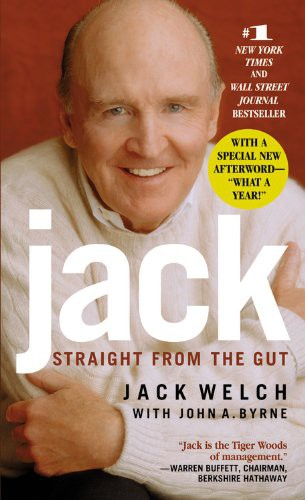

Library › Power & Strategy
Jack: Straight from the Gut — Summary & Key Lessons

Twenty years running General Electric: #1 or #2, the vitality curve, Neutron Jack, and the succession horse race that history judged harshly.
📖 OPEN THE FULL INTERACTIVE BREAKDOWN →🌐 Read it in Hindi, Hinglish, Gujarati, Tamil & 22 more languages — free, with audio.
💡 The Big Idea
Welch's GE tenure (1981-2001) is the most studied CEO run in history, told here in his own voice: the chemical engineer who fought bureaucracy, fired a third of the workforce ('Neutron Jack'), imposed the #1-or-#2 rule (fix, sell or close any business not leading its market), built Crotonville into leadership's West Point, ran Work-Out town halls, pushed 'boundaryless' behavior, adopted Six Sigma late but huge, and grew GE Capital into the group's profit engine. The vitality curve (top 20, middle 70, bottom 10, the bottom 10 leaving every year) is the book's most contested export. It ends with the famous succession horse race (Immelt over McNerney and Nardelli). The caveats write themselves in later history: GE Capital's financial engineering, earnings smoothing (the SEC-era revelations), and the post-Welch collapse (our linked case study) force a modern reader to grade the legend on a curve.
🧠 The 8 Key Lessons
Lesson 1: Number One or Number Two, or Exit
Fix, Sell, or Close
Welch's defining rule: every GE business must be #1 or #2 in its market, or be fixed, sold or closed. The rule's genius was forcing the portfolio question (would you buy this business today at its price?) over legacy loyalty, converting GE from a museum of heritage businesses into an actively managed portfolio. The discipline: market position, not history or synergy folklore, decides capital's home.
📖 Example: Businesses that defined GE's identity for decades (housewares, coal, TVs) were sold or closed, and the capital moved to market-leading engines, medical, and the growing finance arm. Read the full example →
⚡ Do this: Rank every product line by true market position (not internal opinion). Draw the line: which are you #1-2 in, and which are you politely losing money in? Date the exits.
Lesson 2: Candor Is a System, Not a Personality
Work-Out and Boundarylessness
Work-Out sessions put rank-and-file employees in rooms to attack bureaucracy with bosses banned from defending it, decisions made on the spot; 'boundaryless' made idea-theft between divisions a virtue. Welch's insight: large organizations drown truth in politeness, so candor must be engineered as ritual with authority attached, not encouraged as a value.
📖 Example: A Work-Out session killed a 27-form approval process in an afternoon; employees who watched their fix implemented in weeks became the system's evangelists. Read the full example →
⚡ Do this: Run one Work-Out this quarter: frontline staff, one painful process, leaders present but silent until the end, one decision made before the room empties.
Lesson 3: Differentiation: Reward the Top, Tell the Bottom the Truth
The Vitality Curve
Welch's 20-70-10 system forced managers to rank people and exit the bottom 10 annually, arguing kindness-through-vagueness (letting underperformers linger) is cruelty with interest. The practice is contested and shape-dependent (it rewards politics when managers rank badly, and mutates into cut-here quotas), but the underlying duty stands: honest, early feedback plus fair exits beat decade-long ambiguity.
📖 Example: GE's talent machine produced CEOs across corporate America partly because the system forced early judgment, stretch moves and honest conversations most companies postpone until the damage is mutual. Read the full example →
⚡ Do this: If you won't adopt forced curves, adopt their purpose: every employee knows their standing, and the bottom decile hears it with a plan, this quarter, not at the layoff.
Lesson 4: Grow Leaders Faster Than Businesses
Crotonville
Welch treated Crotonville (GE's management school) as the company's true HQ: teaching his own material, arguing with young managers, using it to spot talent and spread doctrine. The insight: leadership pipelines are R&D for organizations; the company that grows leaders multiplies, the one that buys them rents. Build the academy even when headcount is small; the format matters more than the campus.
📖 Example: Crotonville sessions doubled as strategy labs (the Work-Out doctrine itself was stress-tested there) and as the succession machine that made 'GE-trained' a global currency, with the irony the linked case study documents. Read the full example →
⚡ Do this: Institute a monthly internal class taught by YOUR best operators on THEIR actual craft. Ten people, one hour, no slides: that is how academies start.
Lesson 5: Adopt Best Practice Late but Totally
Six Sigma
Welch mocked quality programs until Motorola and Allied proved the economics, then adopted Six Sigma with GE-sized force: training cascades, green belts for managers, and (crucially) tying bonuses to quality results. The lesson: being a fast follower on management practice is fine, IF adoption is total and incentive-linked; partial adoption is the expensive middle.
📖 Example: Six Sigma projects saved billions and (per the book) changed promotion criteria, so engineers learned that process rigor, not just product brilliance, built careers. Read the full example →
⚡ Do this: Pick ONE proven practice your industry's best use (post-mortems, sales qualification, quality gates) and wire it into bonuses this quarter. Total adoption of one beats dabbling in five.
Lesson 6: Finance Can Eat the Company
GE Capital's Rise
The book celebrates GE Capital's growth with 1990s optimism; history graded it differently: the finance arm's size, borrowing-cost advantage and earnings-smoothing role (later documented) made GE look invincible until credit cycles said otherwise. The cautionary lesson: when a financial arm becomes the profit engine of an industrial group, the group's true business is leverage, and leverage is a borrowed halo.
📖 Example: Welch-era earnings consistency (the 'dividend aristocrat' aura) leaned on Capital's counter-cyclical blips; the linked case study shows the same engine reversed in 2008-2018. Read the full example →
⚡ Do this: Audit what fraction of your profits come from financial structure (terms, timing, float) versus operations. If finance leads, write the downside scenario it creates.
Lesson 7: Succession Is the CEO's Final Exam, and Horses Are Not Benchmarks
The Horse Race
Welch's public succession contest (Immelt vs McNerney vs Nardelli) energized the company and damaged the losers (all left), and history's verdict on Immelt (the linked case study's collapse) reopened the criteria question: the board chose energy and fit over operating track record. The lesson: succession needs pre-written criteria tied to the NEXT era's challenges, not a popularity derby; otherwise you elect the candidate who best fits the last era.
📖 Example: McNerney (who left for 3M) and Nardelli (Home Depot) both thrived elsewhere while GE stumbled under the chosen successor, the horse race's quiet postscript. Read the full example →
⚡ Do this: Write your succession criteria now, against the challenges your company will face in five years (not the ones you won in five yesterdays), and name two internal candidates against them.
Lesson 8: Face Reality, Including Your Own Legacy
Reality 101
Welch's mantra (face reality as it is) was aimed at managers denying markets; the modern reader applies it to Welch himself: the memoir omits earnings management, the vitality curve's casualties, and the successor question's outcome. Every leader's reality discipline must eventually include their own legend. The lesson: build the culture that can audit the founder, or the founder's shadow becomes the company's reality distortion field.
📖 Example: Reading the book beside the linked case study is a masterclass in itself: the doctrine that fixed GE in 1981 and the doctrine that failed it in 2018 are the same doctrine, wearing different decades. Read the full example →
⚡ Do this: Ask your most candid lieutenant: what does everyone believe about this company that is no longer true? Write the answer down and date it. Repeat annually; this is the audit that matters.
✅ 5-Step Action Plan
- Rank product lines by true market position and date the exits of #3-and-worse.
- Run one Work-Out session this quarter with a real kill decision attached.
- Ensure every employee knows their standing with a plan, this quarter.
- Wire one proven best practice into bonuses, fully, not partially.
- Write succession criteria against the NEXT era's challenges and name two candidates.
⚠️ When This Doesn't Work
This is Welch's memoir at his legend's peak: wins are doctrine, casualties are footnotes, and later reporting (GE Capital's earnings smoothing, the SEC settlement of 2009 over accounting, the post-Welch collapse) recontextualizes entire chapters. The vitality curve remains genuinely contested by research on ranking systems. Read the operating doctrines with respect and the self-portrait with a historian's squint, then read the linked case study for the ending the book could not contain.
💀 The Graveyard Proves It
⚙️ General Electric — The World's Most Valuable Company — Managed Into a Shadow. Burn: From $600B market cap to ~$100B and ejection from the Dow. Read the full case study →
💬 Best Quotes from Jack: Straight from the Gut
- “Fix it, sell it, or close it.”
- “Before you are a leader, success is all about growing yourself. When you become a leader, success is all about growing others.”
- “Face reality as it is, not as it was or as you wish it were.”
Interactive version: mark lessons as read, listen in your language, share quote cards.